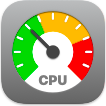
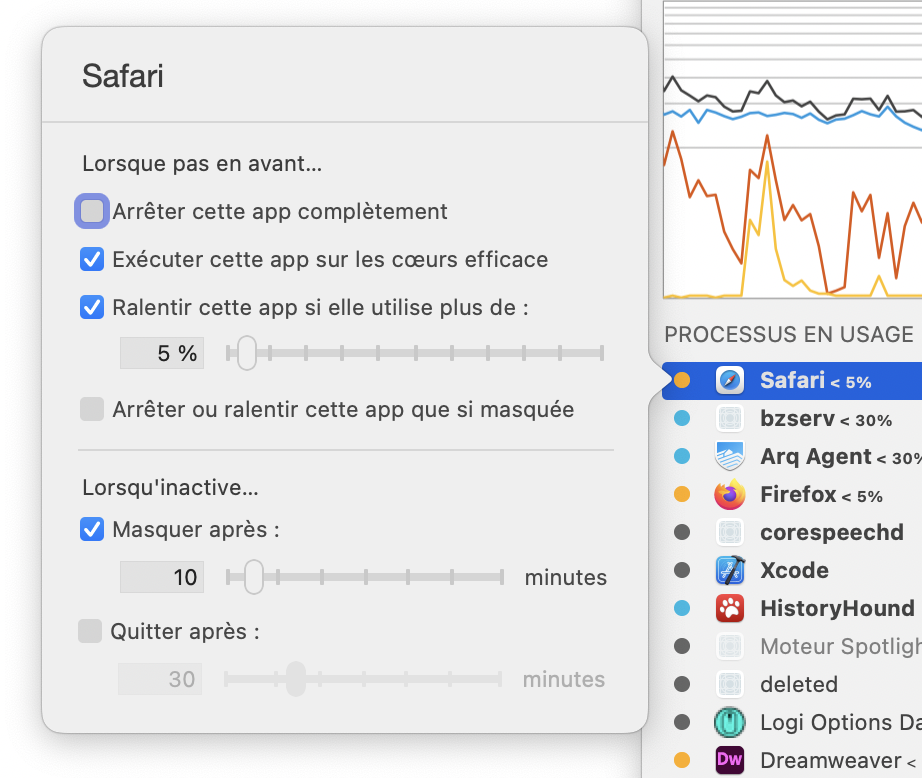

Aide App TamerGestion des applications

Lorsque vous cliquez sur une application dans la liste des processus d'App Tamer, une fenêtre comme celle de droite apparaît. Cochez l'une des cases pour réduire l’utilisation du processeur et de la batterie par l'application :
Arrêter cette app complètement
Lorsque vous cochez cette case, App Tamer mettra l'application en pause chaque fois qu'elle est en arrière-plan. Cela économise plus d'énergie, mais interdit toute activité dans cette application jusqu'à ce que vous la rameniez au premier plan.
Dans les navigateurs Web comme Safari, Firefox et Chrome, cela signifie que les annonces animées ne seront pas lues et que les sites Web comme Facebook ne s’actualiseront pas automatiquement toutes les quelques minutes. Les applications comme Twitter, Messages et Skype qui se synchronisent avec les serveurs sur Internet ne le feront pas tant que vous ne les amènerez pas au premier plan.
Exécuter cette app sur les cœurs efficaces
Sur les Mac pourvus d’une puce Apple Silicon, cette option demande au système d'exécuter l'application sur les cœurs efficaces du processeur. L'application fonctionnera plus lentement, consommera moins d'énergie et interférera moins avec l'application que vous avez devant vous.
Sur les Mac pourvus d’une puce Intel, cette case à cocher s'intitule «Exécuter cette app en basse priorité». Son activation réduira sa priorité, tant en termes d'utilisation du processeur que des entrée/sorties de disque et réseau. Cela réduira son impact sur d'autres applications et réduira quelque peu sa consommation d'énergie, mais pas de façon considérable.
Cette option, sur les Mac Apple Silicon et Intel, est un bon moyen de réduire l'impact d'une application qui occupe le processeur. Si ce n'est pas suffisant, vous pouvez la combiner avec le réglage «Ralentir» ci-dessous pour déclasser l'application et limiter son utilisation du processeur.
Ralentir cette app si elle utilise plus de [x]%
L’activation de cette case à cocher empêche une application d'utiliser plus d'une certaine quantité de temps de traitement lorsqu'elle est en arrière-plan. App Tamer surveille l'activité de l'application et la ralentit si elle commence à utiliser plus de processeurs que vous ne l'avez autorisé. Cela réduira également la quantité de chaleur (et le bruit du ventilateur qui en résulte) générée par votre Mac et gardera votre machine plus réactive, plutôt que de la laisser s'enliser dans beaucoup d'activité en arrière-plan.
Cette stratégie n'économisera pas autant d'énergie que d'arrêter complètement une application, mais permettra à l'application de faire du travail en arrière-plan à une vitesse réduite. Cela est utile pour les applications comme Mail, Spotlight et Time Machine que vous souhaitiez qu’elles travaillent toujours en coulisses, mais que vous ne vouliez pas avoir d'impact sur les performances des autres applications ou que vous réduisiez rapidement la charge de votre batterie.
Arrêter ou ralentir cette app que si masquée
Cette option est activée lorsque vous choisissez de ralentir ou d'arrêter une application, et fait ce qu'elle dit qu'elle fait. App Tamer ne ralentira ni n'arrêtera l'application jusqu'à ce que vous la masquiez (en utilisant la commande «Masquer» ou «Masquer les autres» dans le menu de l'application).
Masquer après [x] minutes
Cette case à cocher indique à App Tamer de masquer une application après qu'elle ait été inactive en arrière-plan pendant plus que la durée spécifiée. Cliquer sur l'application ou la mettre au premier plan réinitialisera la minuterie inactive.
Quitter après [x] minutes
L'activation de cette option quittera une application après qu'elle aura été inactive en arrière-plan pendant plus que la durée spécifiée. Notez que si l'application affiche des alertes lorsqu'elle se ferme pour avertir des modifications non enregistrées, etc., ces alertes apparaîtront toujours. App Tamer ne les accepte pas automatiquement ou n'intervient pas d'une autre manière.
Truc
- Maintenir la touche Option enfoncée pendant que la fenêtre contextuelle des réglages s'affiche pour montrer des contrôles supplémentaires, y compris un curseur pour modifier la priorité du processus (équivalent à la commande Unix «nice») et une case à cocher qui ralentira les applications au premier plan ainsi qu'en arrière-plan.
Stratégies
Comment choisir un pourcentage de temps de traitement pour ralentir une application : essayez 10 % et voyez si l'application obtient toujours son travail en arrière-plan dans un temps que vous jugez acceptable. Si ce n'est pas le cas, donnez-lui un peu plus de temps. Il pourrait y avoir un peu d'expérimentation nécessaire pour savoir ce qui fonctionne pour des applications et des flux de travail particuliers.
Gestion des avertissements «Script ne répond pas» ou «Page qui ne répond pas» : si App Tamer arrête certains navigateurs Web trop longtemps (y compris Google Chrome et Firefox), le navigateur affichera un avertissement indiquant qu'une page ou un script ne répond pas. Dans ces cas, il est préférable de les ralentir à 1 % de temps plutôt que de les arrêter complètement.
Détails utiles
App Tamer n'arrêtera pas, ou ne ralentira pas un navigateur Web pendant qu'il télécharge un fichier, ni Musique (ou iTunes) pendant qu'il lit de la musique ou importe des pistes musicales.
Pour s'assurer que macOS a le temps de mettre à jour les données d'application nécessaires, App Tamer réveillera périodiquement les applications arrêtées pendant quelques secondes. (Par défaut, il le fait toutes les 5 minutes. Cela peut être modifié dans les préférences d’App Tamer).